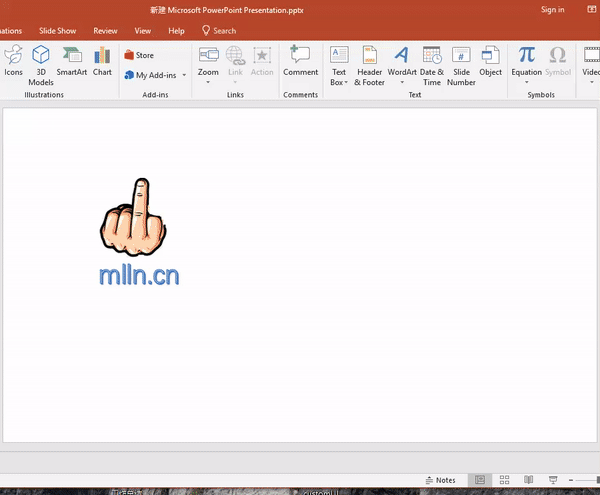

上一篇文章<<electron作为python界面开发入门>>, 收到很多人的关注. 这篇文章的方法是使用electron作为界面引擎, python作为本地接口, 利用zeroMQ作为通讯, 实现了一个HTML开发python GUI 的方法. 但是这个方法不好的地方是, 我们还得处理zeroMQ通讯, 而不像其他GUI库那么简单直接. 那么今天我们介绍另一个方法, 就可以摆脱这个问题.
先看一下官方如何介绍python flexx这个库:
Flexx的主要动机是不可否认的事实, 即网络（即浏览器技术）已经成为用户交付应用程序的越来越流行的方法.
Flexx的目的是提供一个应用程序框架来创建桌面应用程序和Web应用程序. 通过使用浏览器技术, 库本身可以是相对较小且纯粹的Python, 使其应用广泛且易于使用.
通过使用PyScript（Python到JavaScript的翻译）, 整个库的编写都没有一行JavaScript. 这比开发一个相应的“flexx.js”要容易得多. 此外, 它允许用户轻松定义在JavaScript中执行的回调方法, 从而在需要时提供更高的性能.
为Python编写的库, 但不是用Python编写的库存在非常大的困难, 因为用户不容易成为贡献者. 这是scikit-image成功的原因之一, 也是Mayavi失败的原因. 由于Flexx是由Python和PyScript组合编写的, 因此它的用户社区更有可能在其开发中发挥积极的作用.
由于使用flexx, 今天的教程比前一篇简单很多, 下面我们来一步步完成这个web技术开发的python桌面应用.
例如我的目录结构:project/app.py
安装:注意tornado版本是4.x才可以.
pip install flexx
利用已有demo
在flexx的安装文件夹下, 有开发团队写好的很多demo, 为了让这篇教程看起来简单, 我们先不深入到flexx内部, 使用flexx\ui\examples\drawing.py这个demo作为我们的主要代码. 我把这个代码贴出来:
你把如下代码贴到文件project/app.py.
1
2
3
4
5
6
7
8
9
10
11
12
13
14
15
16
17
18
19
20
21
22
23
24
25
26
27
28
29
30
31
32
33
34
35
36
37
38
39
40
41
42
43
44
45
46
47
48
49
50
51
52
53
54
55
56
57
58
59
60
61
62
63
64
65
66
67
68
69
70
71
72
73
74
75
76
77
|
"""
This example demonstrates a simple drawing app. Useful for testing
canvas and its mouse events.
"""
from flexx import app, ui, event
class Drawing(ui.CanvasWidget):
CSS = """
.flx-Drawing {background: #fff; border: 5px solid #000;}
"""
class JS:
def init(self):
super().init()
self.ctx = self.node.getContext('2d')
self._last_ev = None
@event.connect('mouse_move')
def on_move(self, *events):
for ev in events:
last_ev = self._last_ev
if 1 in ev.buttons and last_ev is not None:
self.ctx.beginPath()
self.ctx.strokeStyle = '#080'
self.ctx.lineWidth = 3
self.ctx.lineCap = 'round'
self.ctx.moveTo(*last_ev.pos)
self.ctx.lineTo(*ev.pos)
self.ctx.stroke()
self._last_ev = ev
@event.connect('mouse_down')
def on_down(self, *events):
for ev in events:
self.ctx.beginPath()
self.ctx.fillStyle = '#f00'
self.ctx.arc(ev.pos[0], ev.pos[1], 3, 0, 6.2831)
self.ctx.fill()
self._last_ev = ev
@event.connect('mouse_up')
def on_up(self, *events):
for ev in events:
self.ctx.beginPath()
self.ctx.fillStyle = '#00f'
self.ctx.arc(ev.pos[0], ev.pos[1], 3, 0, 6.2831)
self.ctx.fill()
self._last_ev = None
class Main(ui.Widget):
""" Embed in larger widget to test offset.
"""
CSS = """
.flx-Drawing {background: #fff; border: 5px solid #000;}
"""
def init(self):
with ui.VBox():
ui.Widget(flex=1)
with ui.HBox(flex=2):
ui.Widget(flex=1)
Drawing(flex=2)
ui.Widget(flex=1)
ui.Widget(flex=1)
if __name__ == '__main__':
m = app.launch(Main, 'xul')
app.start()
|
这一部分略去, 因为很简单, 唯一需要提到的是electron尽量全局安装(使用 g参数)
我们只改最后的if __name__ == '__main__':部分, 先看代码, 然后看备注里的解释.
1
2
3
4
5
6
7
8
9
10
| if __name__ == '__main__':
m = app.serve(Main)
app_name = m.__name__
port = '8899'
app.create_server(port=port)
import subprocess
url = 'http://localhost:{port}/{app_name}'.format(port=port, app_name=app_name)
cmd = r'D:\programs\node-v8.10.0-win-x64\electron.cmd {}'.format(url)
subprocess.Popen(cmd)
app.run()
|
看完注释, 我需要说明一点就是, flexx的原理是使用socket进行前后端的通讯(python和网页), 所以使用了tornado作为服务器. 我们的electron没有做任何事情, 只是一个浏览器的作用. 当然你可以不使用electron, 只使用电脑上安装的浏览器即可, 但是为了让用户感觉这是一个桌面应用, 我还是喜欢electron, 而且不会因为用户浏览器的差别造成app的兼容性问题.
